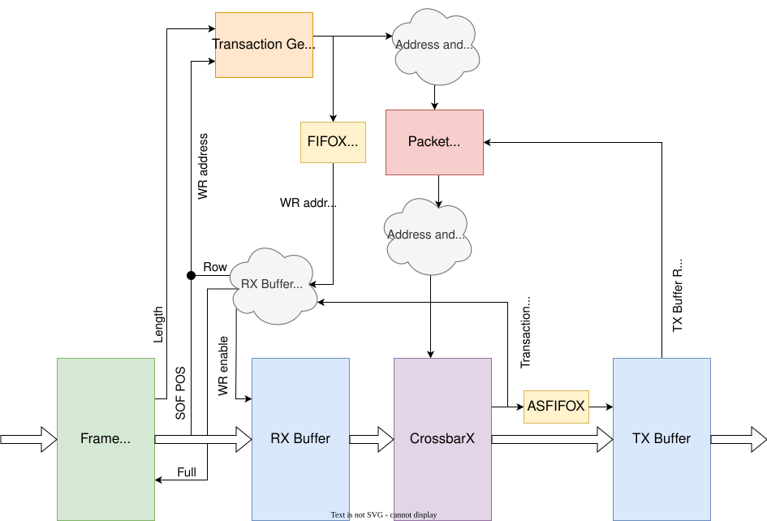

CrossbarX Stream¶
- ENTITY CROSSBARX_STREAM IS¶
This unit can:
discard packets,
insert gaps between packets and
extend and/or shrink them from the front and/or from the back.
The CrossbarX component transfers the transactions from the Input buffer to the Output buffer according to the instructions provided by the Packet Planner component. The instructions consist of a transaction’s length, its address in the Input buffer, and in the Output buffer.
Generics
PortsGeneric
Type
Default
Description
CX_USE_CLK2
boolean
true
Clock settings for 1) CrossbarX and 2) Output buffer 1) CrossbarX Transfer data on double frequency Clock.
CX_USE_CLK_ARB
boolean
false
Transfer data on arbitrary frequency Clock. (Overrides CX_USE_CLK2 when set to True.) See entity of CrossbarX for more detail.
OBUF_META_EQ_OUTPUT
boolean
false
2) Output buffer Set True when RX_CLK has the same period as TX_CLK.
OBUF_INPUT_EQ_OUTPUT
boolean
false
Set True when not using CLK2 or CLK_ARB and RX_CLK has the same period as TX_CLK.
MFB_REGIONS
natural
4
Number of Regions within a data word, must be power of 2.
MFB_REGION_SIZE
natural
8
Region size (in Blocks).
MFB_BLOCK_SIZE
natural
8
Block size (in Items).
MFB_ITEM_WIDTH
natural
8
Item width (in bits), must be 8.
MFB_META_WIDTH
natural
1
Width of MFB metadata (in bits).
PKT_MTU
natural
1024
Maximum packet size in MFB ITEMS.
NUM_OF_PKTS
natural
4
Number of maximum sized packets in Input and Output buffer MUST be a power of 2 (4 -> ~150 Gb/s, 8 -> ~400 Gb/s)
TRANS_FIFO_SIZE
natural
64
Maximum number of Transaction waiting for data transfer. Setting this value too low will lead to lower throughput, which should trigger a simulation assert warning in component CrossbarX.
F_GAP_ADJUST_EN
boolean
false
CrossbarX Stream functions setup ———————————— Insert gaps of defined size between packets. When set to False, the smallest possible gap is used.
F_GAP_ADJUST_SIZE_AVG
natural
24
Required average gap after every packet in MFB ITEMS. Differences in gaps are calculated according to the Deficit Idle Count algorithm. If AVG size is equal to MIN size, all gap sizes will be greater or equal to MIN size. MUST be greater or equal to F_GAP_ADJUST_SIZE_MIN!
F_GAP_ADJUST_SIZE_MIN
natural
24
MUST be greater or equal to MFB_BLOCK_SIZE!
F_EXTEND_START_EN
boolean
false
Enable to extend (or shrink) packets at the front.
F_EXTEND_START_SIZE
integer
-4
In MFB ITEMS, negative number for packet shrinking.
F_EXTEND_END_EN
boolean
false
Enable to extend (or shrink) packets at the back.
F_EXTEND_END_SIZE
integer
-5
In MFB ITEMS, negative number for packet shrinking.
DEVICE
string
“STRATIX10”
FPGA device name: ULTRASCALE, STRATIX10, ..
Port
Type
Mode
Description
=====
Clock and Reset
=====
=====
RX_CLK
std_logic
in
RX_CLK2
std_logic
in
Double frequency and same source as RX_CLK Only used when CX_USE_CLK2==True and CX_USE_CLK_ARB==False
RX_RESET
std_logic
in
TX_CLK
std_logic
in
TX_RESET
std_logic
in
CX_CLK_ARB
std_logic
in
Arbitrary Clock and Reset for CrossbarX, only used when CX_USE_CLK_ARB==True
CX_RESET_ARB
std_logic
in
=====
RX MFB STREAM
=====
=====
RX_MFB_DATA
std_logic_vector(MFB_REGIONS*MFB_REGION_SIZE*MFB_BLOCK_SIZE*MFB_ITEM_WIDTH-1 downto 0)
in
RX_MFB_META
std_logic_vector(MFB_REGIONS*MFB_META_WIDTH-1 downto 0)
in
valid with EOF
RX_MFB_DISCARD
std_logic_vector(MFB_REGIONS-1 downto 0)
in
valid with EOF
RX_MFB_SOF_POS
std_logic_vector(MFB_REGIONS*max(1,log2(MFB_REGION_SIZE))-1 downto 0)
in
RX_MFB_EOF_POS
std_logic_vector(MFB_REGIONS*max(1,log2(MFB_REGION_SIZE*MFB_BLOCK_SIZE))-1 downto 0)
in
RX_MFB_SOF
std_logic_vector(MFB_REGIONS-1 downto 0)
in
RX_MFB_EOF
std_logic_vector(MFB_REGIONS-1 downto 0)
in
RX_MFB_SRC_RDY
std_logic
in
RX_MFB_DST_RDY
std_logic
out
=====
TX MFB STREAM
=====
=====
TX_MFB_DATA
std_logic_vector(MFB_REGIONS*MFB_REGION_SIZE*MFB_BLOCK_SIZE*MFB_ITEM_WIDTH-1 downto 0)
out
TX_MFB_META
std_logic_vector(MFB_REGIONS*MFB_META_WIDTH-1 downto 0)
out
valid with EOF
TX_MFB_SOF_POS
std_logic_vector(MFB_REGIONS*max(1,log2(MFB_REGION_SIZE))-1 downto 0)
out
TX_MFB_EOF_POS
std_logic_vector(MFB_REGIONS*max(1,log2(MFB_REGION_SIZE*MFB_BLOCK_SIZE))-1 downto 0)
out
TX_MFB_SOF
std_logic_vector(MFB_REGIONS-1 downto 0)
out
TX_MFB_EOF
std_logic_vector(MFB_REGIONS-1 downto 0)
out
TX_MFB_SRC_RDY
std_logic
out
TX_MFB_DST_RDY
std_logic
in
Block diagram¶
{kind=link}

Operations¶
Discarding : discards come with EOFs. Therefore, they are first transferred from the RX Buffer through the CX Stream to the TX Buffer, where they are overwritten by the next transaction.
Gap insertion : the Packet Planner component (PP) takes care of this.
Shrinking and extending logic : the Length and RX Buffer RD address and TX Buffer WR address are adjusted appropriately, before and after the PP.
Shrinking: decrease the length only before the PP. When shrinking from the front, also adjust the RX Buffer RD address.
Extending: increase the length before the PP and decrease it after the PP. The increased length is propagated to the TX Buffer in metadata. When extending at the front, also adjust the TX Buffer WR address.